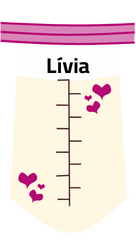
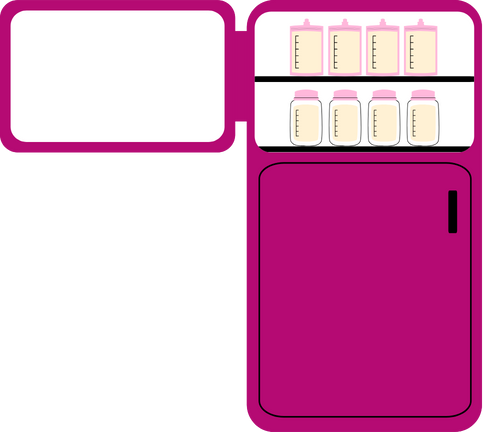
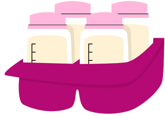

Passo 1 : Identifique o frasco
Escreva seu nome, data e hora da coleta no frasco de leite.

Passo 2: efrigere o leite imediatamente
O leite materno pode ser armazenado na geladeira por até 24 horas antes de ser congelado.

Passo 3:Armazenamento no congelador
O leite deve ser congelado imediatamente se não for usado nas primeiras 24 horas. No congelador (-18ºC), pode ser armazenado por até 15 dias.